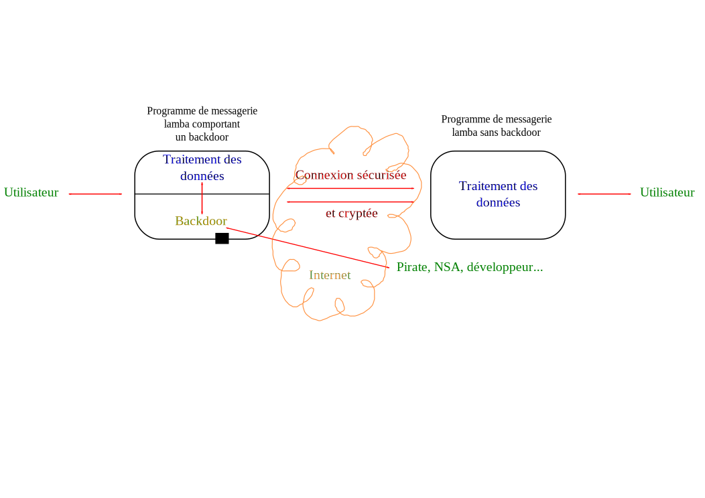

Le navigateur est un peu à la ramasse et peut ne pas supporter toutes les fonctionnalités requises par impress.js.
Pour plus de magie, utiliser de préférence la dernière version de Lynx (ou de Firefox).
1.2.3 Les Backdoors et la NSA
Qu'est-ce qu'une « porte dérobée » ?
Retenez ce terme ; il sera répété de nombreuses fois.
Principe de fonctionnement
